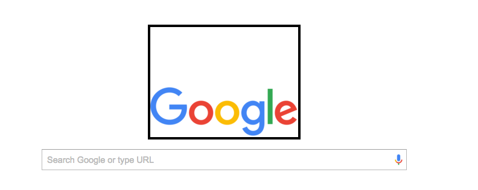
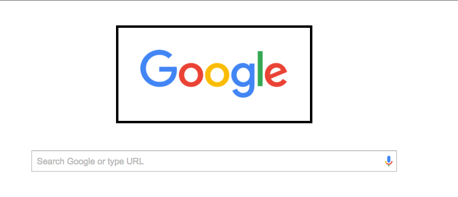
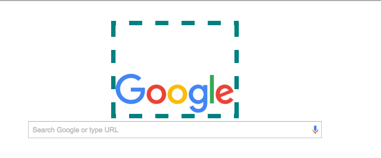

Margin, Border and Padding
Subtitle
by Becky Lehmann
October 18, 2015
Overview
If you're just starting off your HTML and CSS journey, you may have experienced a blunder or two when
Padding
This is a picture to show the default padding for Google (padding-top: 112px;)  This is a picture to show edits to the padding, padding: 40px; 
Border
This is a reference again to the picture above, the black border This is a picture of the Google logo with teal padding Border: dashed teal 10px 
Margin
This is a picture of the plain Google logo, no border:
 This is a picture of the logo with margin: -80px;
This is a picture of the logo with margin: -80px;
 This is a picture of the logo with margin: 100px;
This is a picture of the logo with margin: 100px;